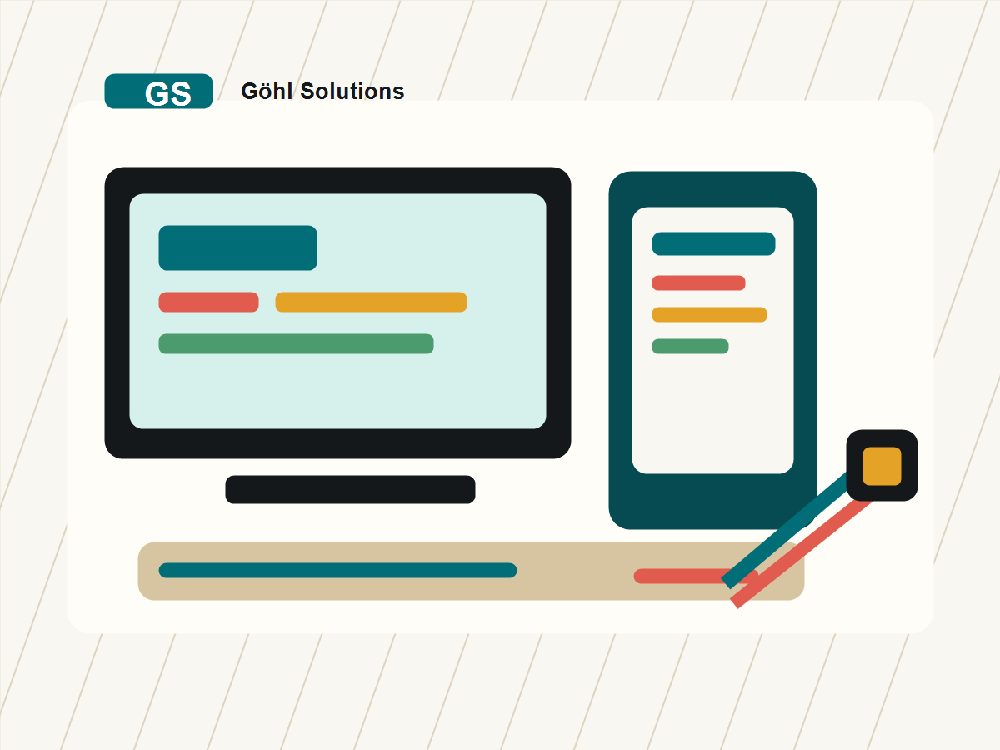

Destaque
Sob consulta
App sob medida
Desenvolvimento e adaptação de aplicativos para negócios que precisam sair do improviso.
- Fluxos personalizados
- Layout alinhado à marca
- Publicação e suporte inicial
A Göhl Solutions veio para ficar
Apps prontos para vender, atualizações sob medida e conserto de computadores com atendimento direto, claro e sem enrolação.

Produtos digitais com apresentação clara, compra orientada e espaço para novos lançamentos.
Melhorias, correções, novas telas, ajustes de fluxo e evolução contínua para seus sistemas.
Diagnóstico, limpeza, instalação, upgrades, backup e recuperação para máquinas do dia a dia.
Apps da casa
Uma vitrine organizada para apresentar apps próprios, planos, benefícios e pedidos de instalação.
Desenvolvimento e adaptação de aplicativos para negócios que precisam sair do improviso.
Base para cadastros, controle de dados, relatórios e acompanhamento da rotina.
Modelo para receber pedidos, organizar solicitações e reduzir mensagens perdidas.
Evolução contínua
Correções, melhorias e novas funções planejadas para o app não parar no tempo.
Ajuste de erros, revisão de telas e estabilização de funções já existentes.
Refino de experiência, performance, organização visual e pequenas automações.
Planejamento, orçamento e implantação de recursos que aumentam o valor do app.
Assistência técnica
Atendimento para quem precisa recuperar desempenho, resolver travamentos, instalar programas ou deixar a máquina pronta para trabalhar.
Troca para SSD, memória, limpeza de inicialização e otimização do sistema.
Instalação de Windows, drivers, programas essenciais e configuração inicial.
Organização de arquivos, cópias de segurança e tentativa de recuperação de dados.
Configuração de internet, impressoras, roteadores e acessórios de trabalho.
Jeito Göhl
Primeiro vem a conversa, o diagnóstico e o caminho recomendado. Depois você decide se quer seguir.
Comece agora
Escolha o tipo de atendimento e gere uma mensagem pronta para enviar à Göhl Solutions.